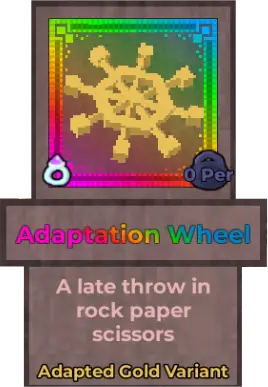

Adaptation Wheel

Info
Slot: Accessory
Recolorable?: Yes
Unique Colors: Adapted Gold
Particle Effects: None
Sound Effects: None
Owner: None
Appearance & Effects
In-game description: A late throw in rock paper scissors
The Adaptation Wheel resembles a simple nautical ship wheel. It has eight spokes with bulbs on the ends, and two central circles. When a player wears the Adaptation Wheel, it floats above the player's head while rotating around its central axis. It comes with it's own unique metallic color, Adapted Gold, and can be recolored to any of the other normal colors.
Inspiration
The Adaptation Wheel is inspired by the Wheel of Adaptation from the popular series Jujutsu Kaisen. The Wheel of Adaptation allows it's wielder, the Eight-Handled Sword Divergent Sila Divine General Mahoraga, to adapt to any and all attacks that it is hit with.

CAPTION_1
CAPTION_2
Image Gallery
CAPTION
CAPTION
CAPTION
CAPTION
CAPTION
CAPTION